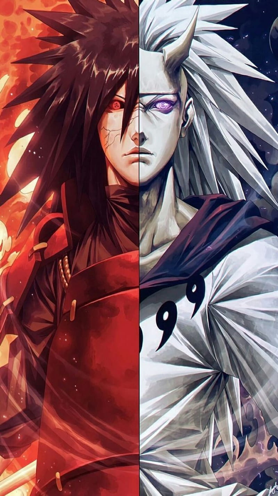

MADARA UCHIHA
Madara Uchiha is a main antagonist manga and anime character in the Naruto series created by Masashi Kishimoto. He appears for the first time in "Part II" of the manga and the Shippuden anime adaptation, as a major antagonist.
